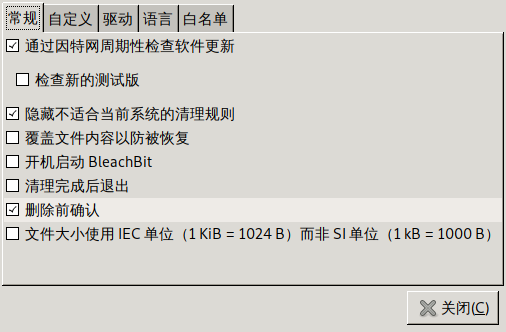

保护隐私的日常方法
目录
从 https://opensourceforu.com/2019/05/things-you-can-do-to-protect-the-privacy-of-your-data/ 上看到的，觉得很不错，记录一下
不要保存命令到history中
Bash shell默认会将输入过的命令保存在 $HISTFILE 指代的文件中 保存的数量由 $HISTSIZE 来决定。
若 $HISTCONTROL 中的值是 ignorespace 或 ignoreboth,则可以通过在命令前插入空格的方式告诉bash该命令不记入history中。
关于 $HISTCONTROL 的说明如下:
HISTCONTROL
如果设置为 ignorespace, 以 space 开头的行将不会插入到历史列表中。如果设置为 ignoredups, 匹配上一次历史记录的行将不会
插入。设置为 ignoreboth 会结合这两种选项。如果没有定义，或者设置为其他值，所有解释器读取的行都将存入历史列表， 但还
要经过 HISTIGNORE 处理。这个变量的作用可以被 HISTIGNORE 替代。多行的组合命令的第二和其余行都不会被检测，不管
HISTCONTROL 是什么，都会加入到历史中。
或者也可以通过 set -o history 来临时禁止本次登陆session中的history功能。
对于已经记录在history中的命令，可以使用 history -c 清空历史记录，或者使用 history -d N 删除第N条历史记录
删除文件前使用shred命令覆盖文件内容
只是删除文件的话，文件内容其实还是保存在磁盘上，可以通过特殊工具读回。shred工具则会通过随机写入数据的方式对文件内容进行覆盖。
shred ${file}
默认 shred 会覆盖文件内容三次，但是我们也可以通过 -n N 来指定覆盖内容 N 次
shred -n 1 f{file}
我们还可以通过 -u 选项让 shred 在混乱文件内容后直接删掉该文件
shred -u ${file}
因此，我们可以写一个alias达到安全删除的目的
alias rm='shred -u'
vi加密文本文件
vi中可以通过 :X 对文件内容进行加密，系统会让你输入两次密码，然后保存退出，文件就被加密了。
再用vi打开加密的文件时，vi会自动发现文件被加密，然后让你输入解密密码。
gpg加密文件
上面说的vi只能用来加密文件文件，而gpg可以用来加密任何文件，且功能也要强大的多，比如可以自选加密方式。
加密文件
我们一般使用对称算法来加密文件。
gpg --symmetric ${file}
这会产生一个 ${file}.gpg 的文件就是加密后的文件，但是需要注意的是，原始文件 ${file} 依然存在，不会被删除.
指定加密算法
通过 --cipher-algo 来指定加密算法，比如
gpg --symmetric --cipher-algo AES256 ${gpg_file}
指定输出文件
不管是加密还是解密，都可以使用 -o 选项指定输出文件，比如
gpg -o ${gpg_file} ${file}
gpg -o ${file} ${gpg_file}
清理浏览器缓存、cookie和历史
在Firefox中访问 about:preferences#privacy
使用private mode浏览网页
在Firefox中按下 Ctrl-Shift-P,打开private窗口
使用DuckDuckGo搜索引擎代替google搜索引擎
google搜索引擎会搜集用户数据，而DuockDuckGo并不会搜索用户数据。
使用Bleachbit清理系统临时文件
